Claude提升生物分子建模的效率与规模
📖 中文摘要
专业术语注解
生物分子建模：用计算模型预测与设计蛋白质等生物大分子的结构与功能推理优化（inference optimization）：改进模型运行效率，使其在更短时间、更少内存内完成预测三角注意力/三角乘法：生物分子结构预测模型中最耗算的两种运算，耗时随系统规模三次方增长de novo蛋白结合子：从头设计、能紧密附着特定靶标的小蛋白低内存模式：降低显存占用以在单GPU上预测超大分子系统的优化方案📄 中文全文
- 类别： 科学（Science）
- 来源： https://www.anthropic.com/research/claude-uplifts-biomolecular-modeling
科学（Science） 2026 年 9 月 17 日 在这篇文章中，我们分享 Claude 如何让科学家用来预测和设计生物分子的开源模型变得更快、更省内存。Claude 在 Claude Science 环境中工作，在不到四周的时间内优化了 30 多个此类模型，使它们的速度平均提升约 4 倍。它还创建了低内存模式，能够在单个 NVIDIA GPU 节点上准确预测超过 10,000 个 token（氨基酸、核苷酸，以及来自小分子和离子的原子）的生物分子系统。我们正在开源所有优化后的代码，并与 Adaptyv Bio 联合赞助一场蛋白设计竞赛，提供最高 100 万美元的 Claude 额度，以及对超过 5,000 个设计的湿实验验证。
最近，我们分享了成果，展示了 Claude 通过以专家水平编排开源蛋白设计与结构预测模型，来设计 _de novo（从头设计）蛋白结合物的能力。de novo 结合物是小型的、经计算设计的蛋白质，能紧密附着在特定的靶分子上，以激活、阻断或向其递送物质。_
尽管这令人鼓舞地展示了 AI 的科学能力，也是推进药物发现的早期一步，但它消耗的资源比绝大多数蛋白设计者可获得的资源要多。我们允许 Claude 在每个靶标上最多花费 10,000 美元（在 AI 基础设施平台 Modal 上），大约相当于 2,500 个 NVIDIA H100 GPU 小时。
为了让更多研究者能够开展这类研究，我们开始探索推理优化，以更高效地运行这些模型。作为这些优化的早期成果，Claude Mythos 5.1 加速了七个开源生物学模型，使它们的运行速度最高提升 2.5 倍。
在此，我们展示新成果，表明一个内部的通用研究模型能够优化 30 多个为各类生物任务（如结构预测和蛋白设计，以及基因组学和蛋白质语言模型）训练的深度学习模型。平均而言，Claude 能够将这类任务加速约 4 倍，同时仅牺牲极少的精度，并且在输出完全一致的情况下提速近 2 倍。Claude 还改善了这些模型的内存利用率，使得预测前所未有的超大生物分子系统成为可能。通过将这些成果与我们此前智能体式蛋白设计方法的简化相结合，我们表明 Claude 能够用比此前报告少两个数量级的 GPU 小时，达到与之前相当的 in silico（计算机模拟）表现。
除了蛋白设计之外，这些专门的生物模型还被分子生物学家广泛使用，包括用于药物发现与开发。我们今天开源所有这些模型的优化代码（在此），以便更广泛的社区使用。更多细节见我们的技术报告（在此）。
为了进一步支持社区，我们还与 Adaptyv Bio 联合赞助一场蛋白设计竞赛，后者开创了开放蛋白设计竞赛。我们共同挑选了五个处于当今能力前沿的挑战性问题。在 Adaptyv 的协助下，并得益于 Modal 和 Twist Bioscience 的慷慨贡献，我们承诺提供最高 100 万美元的 Claude 额度和 25 万美元的 Modal 计算额度，以及对超过 5,000 个设计的湿实验验证。更多信息（在此）和（在此申请）。
加速蛋白结构预测与设计模型
蛋白结构预测是指仅从蛋白质的氨基酸序列确定其三维结构的问题。蛋白设计则是创造具有特定结构、功能或一组属性的蛋白质的过程。这些计算工具结合起来，让科学家能够探究关键的生物分子过程（例如癌症如何形成），并创造有用的分子（例如能够靶向这些癌症的药物）。
现代结构预测模型，如 AlphaFold3、OpenFold3 和 Boltz-2，将其大部分计算运行时间和内存消耗在两项操作上：三角注意力（triangle attention）和三角乘法（triangle multiplication），它们作用于 token 三元组。这些操作使得对生物分子系统几何结构的建模成为可能，但它们的计算代价极高，因为在运行时间和内存上都是三次方关系：系统规模翻倍需要 8 倍的时间和内存，而翻三倍则需要 27 倍。
编写内核（kernels）——用于 GPU 等加速计算硬件的低层软件转换层——是降低这些成本的常用方法。鉴于其重要性，三角注意力与三角乘法一直是专门内核开发工作的主题，先是 NVIDIA 的 cuEquivariance，最近则是 NVIDIA 的 BioNeMo Inference Runtime（BioNeMo-IR）。
为了我们自己优化结构预测模型推理的工作，我们与 Claude 合作开发了 FlashPairformer，一组加速三角注意力和三角乘法的自定义内核。它达到了新的最先进水平，根据模型配置的不同，在三角注意力上平均比领域标准快 2.7–2.9 倍，在三角乘法上快 1.7–3.2 倍。
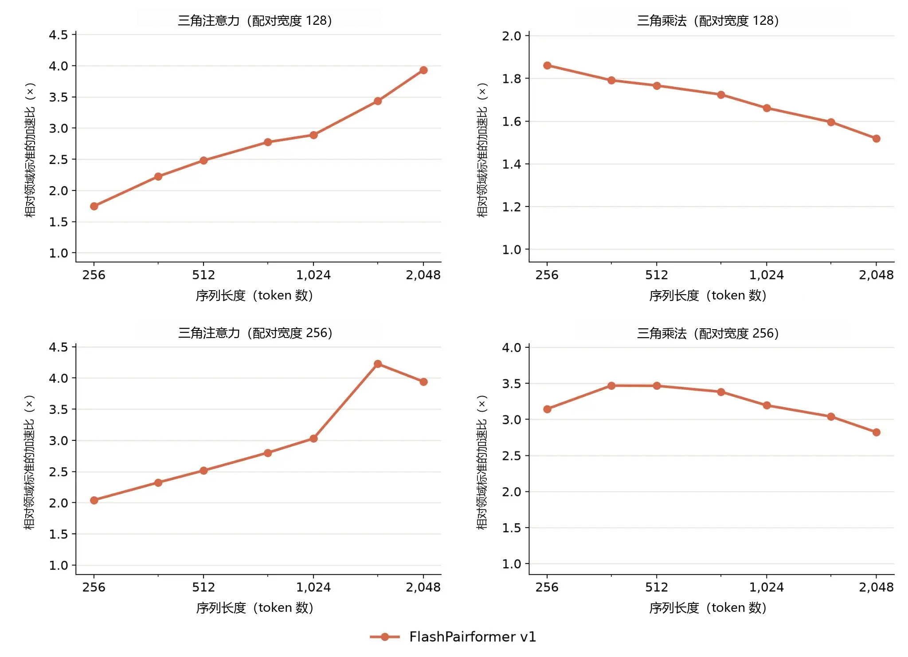
我们与 Claude 合作开发了 FlashPairformer，一组加速三角注意力和三角乘法的自定义内核，它们是支撑最先进生物分子结构预测模型的 Pairformer 架构的主要组成部分。结果是相对于领域标准报告的。除了开发可迁移的内核，我们还让 Claude 逐个针对每个模型，目标是产生更具针对性的优化。这些改动包括缓存冗余的重复计算工作，以及将废弃分支简化为它们的常量输出。这些改进的组合使结构预测模型平均加速 4 倍，并且对于每个模型，我们都确认 Claude 加速后的版本没有影响其下游任务（如结构预测）的表现。
一支经验丰富的工程师团队通常需要数周才能为每个模型完成这样的优化，而且这项工作往往无法在不同模型之间迁移。由 Anthropic 两名在生物分子建模方面经验丰富、但此前没有推理优化或内核工程经验的技术人员监督的 Claude，在不到四周的时间内完成了对 30 多个开源模型（涵盖生物分子结构预测、蛋白设计、蛋白质语言建模和基因组学）的加速。我们的结果表明，前沿 AI 模型将帮助该领域的其他人以更快的速度和更轻松的方式构建科学工具。
 Claude 的优化加速了十多个生物分子结构预测模型，平均实现约 4 倍加速，精度下降极小，在输出一致的情况下约 1.6 倍加速。注：ColabFold 1.6.3 同期发布的可选快速内核尚未在此处进行基准测试。
Claude 的优化加速了十多个生物分子结构预测模型，平均实现约 4 倍加速，精度下降极小，在输出一致的情况下约 1.6 倍加速。注：ColabFold 1.6.3 同期发布的可选快速内核尚未在此处进行基准测试。
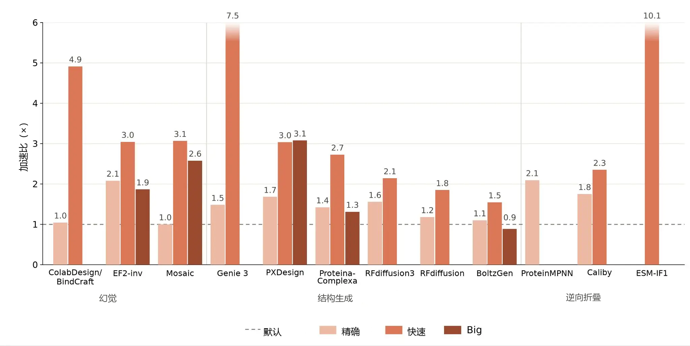
Claude 的优化还加速了多个蛋白设计模型，涵盖幻觉、结构生成和逆向折叠。这些模型依赖多种架构，包括 AlphaFold 类结构 transformer、扩散、流匹配和图神经网络。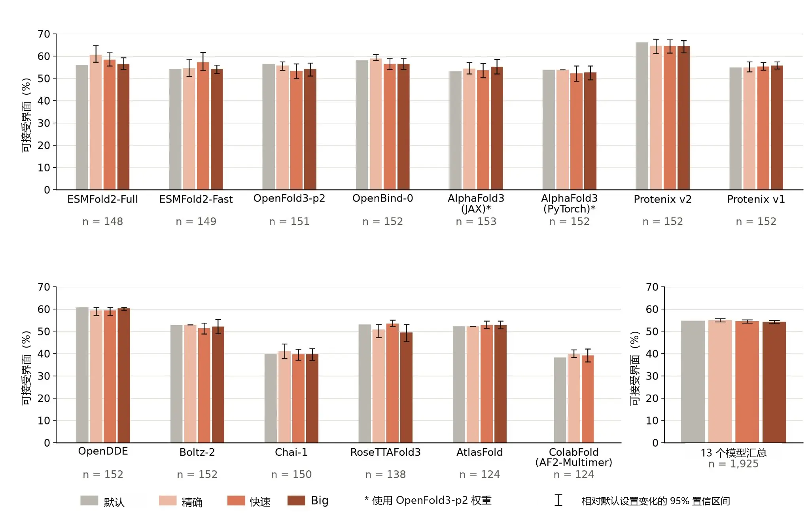
我们为结构预测开发的快速模式，在合并的一组生物分子界面上与默认设置统计上无法区分。如果预测界面的 DockQ 分数大于 0.23，我们就认为该界面是可接受的。实现对巨型生物分子系统的建模
除了让这些蛋白结构预测和设计模型更快，我们还让 Claude 承担降低对大型分子机器建模所需内存占用量的任务。细胞中的许多工作正是由这类系统完成的，包括构建蛋白质的核糖体、为细胞供能的呼吸复合体，以及帮助其他蛋白质折叠的分子伴侣。每个系统都由数十个组分构成，其功能取决于这些组分如何组合在一起并相互作用。预测如此庞大系统的结构通常需要大多数分子生物学家无法获得的大量计算资源，例如跨多个 GPU 节点的推理。
Claude 创建了一种低内存的"Big"模式，能够在单个 NVIDIA GPU 节点上准确建模超过 10,000 个 token 的系统，并在超过 70,000 个 token 的系统上成功推理——这是此前无法企及的任务。使用 Big 模式成功折叠的分子机器包括人类线粒体复合体 I、TRiC 分子伴侣复合体、一个蛋白酶体和细菌核糖体，每一个都与实验确定的结构高度吻合。据我们所知，这些是用结构预测模型准确折叠的最大结构中的一部分，其中复合体 I 和 70S 核糖体各自由超过 10,000 个 token 构成，相比之下，AlphaFold3 准确预测的 40S 核糖体由 7,663 个 token 构成。
 Claude 创建的低内存"Big"模式使开源结构预测模型能够在单个 NVIDIA GPU 节点上准确预测由超过 10,000 个 token 构成的生物分子系统，表明这些专门的模型能够泛化到超出其训练上下文近 1.5 个数量级的范围。前三行展示准确预测的系统；底行展示预测不准确的系统。如果界面的 DockQ 分数至少为 0.23，则认为界面是准确的。
Claude 创建的低内存"Big"模式使开源结构预测模型能够在单个 NVIDIA GPU 节点上准确预测由超过 10,000 个 token 构成的生物分子系统，表明这些专门的模型能够泛化到超出其训练上下文近 1.5 个数量级的范围。前三行展示准确预测的系统；底行展示预测不准确的系统。如果界面的 DockQ 分数至少为 0.23，则认为界面是准确的。
为了测试 Claude 优化的极限，我们让 Claude 预测比此前任何已达成成果都更大的结构。使用单个 8-GPU B300 节点，Claude 生成了从超过 31,000 到超过 70,000 个 token 不等的完整病毒衣壳和蛋白隔室的预测。这些系统比这些结构预测模型的训练上下文大了近两个数量级，而且或许并不意外，它们没有被正确预测。然而，由于现在仅需一个 NVIDIA B300 节点，在此规模上推理的门槛已显著降低，这表明随着工具的改进，研究人员很快就能对日益复杂的生物系统集合进行计算建模。
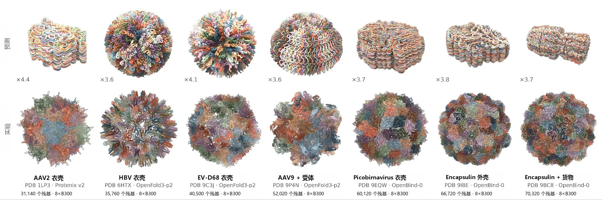
"Big"模式使开源结构预测模型能够使用单个 NVIDIA B300 节点，在空前规模上成功运行推理。能力验证运行以单次主干前向传播（无循环）执行，作为概念验证。预测结构发生坍塌，表明在超出训练上下文近两个数量级时缺乏泛化能力。Claude 高效设计 de novo 蛋白结合物
在我们早先的蛋白设计工作中，我们给 Claude 提供了一份约 16,000 词的提示词，鼓励它利用子智能体，并在 24 小时内为每个靶标在 Modal 上最多花费 10,000 美元（约 2,500 个 NVIDIA H100 GPU 小时）。在这里，我们给单个 Claude 模型提供 1 个 NVIDIA H200 和 24 小时实际运行时间、一份约 1,100 词的提示词，以及一份预装工具的参考表，没有子智能体，也没有人类引导设计。
我们针对 16 个靶标运行了三个 Claude 模型（Mythos 5.1、Mythos 5 和 Opus 5），使用本文描述的加速生物分子模型。我们通过 ipSAE 对设计打分，这是一种经证明可预测湿实验中结合情况的 in silico（计算机模拟）分数。在 16 个靶标上平均，所有三个被评估的 Claude 模型得分中位数和最高分的设计，尽管使用的 GPU 小时约少两个数量级，仍达到了与我们早期 Mythos 5.1 行动大致相同的 ipSAE 值。我们还考虑了 Claude 的 token 成本，发现通过 GPU 和 token 合计约 150 美元的花费，我们就能达到与我们此前行动水平相当的 in silico 表现。
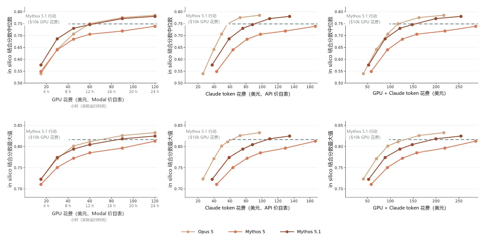
一个能访问 1 个 NVIDIA H200 和 24 小时实际运行时间的单个 Claude 模型，设计出了 de novo 蛋白结合物，其 in silico 结合分数与我们早期的 Mythos 5.1 行动（虚线）相当，后者可利用子智能体并使用约 100 倍的 GPU 小时。每条曲线代表一个 Claude 模型编排加速生物分子模型时 ipSAE 分数（in silico 结合分数）的中位数（上）或最大值（下）。我们展示了相对于估计 GPU 花费（左）、token 花费（中）及其组合（右）的分数。结果在 16 个靶标上平均，每个靶标最多五次独立运行。与 Adaptyv Bio 联合赞助蛋白设计竞赛
上述优化帮助我们更高效地预测和设计分子，同时解锁了原本因资源受限而无法实现的能力。为了展示它们带来的提升，以及 Claude 对分子设计更广泛的影响，我们与 Adaptyv Bio 合作推出一场蛋白设计竞赛。我们挑选了五个处于当今蛋白设计能力前沿的问题，包括物种交叉反应性、pH 敏感性、肽-MHC 特异性等挑战，以及 GPCR 等困难靶标。
与 Adaptyv 团队一起，我们将针对这些问题对社区提交的超过 5,000 个设计进行实验验证。我们将为参与的研究人员提供最高 100 万美元的 Claude 额度和用于 Adaptyv 实验验证的额外资金，Modal 将提供最高 25 万美元的计算额度，Twist Bioscience 将提供竞赛用的 DNA。你可以找到更多信息，包括资格标准（在此）和（在此申请）。
我们还开始通过我们的生命科学验证计划（Life Sciences Verification Program）向生命科学工作者提供前沿 AI 能力，用于与生物相关的工作。我们最近招收了第一批组织，并于今天以公开测试版开放该计划。你可以找到更多信息（在此）。
延伸阅读
以下资源提供了对上述成果的更深入技术细节和更详细信息：
相关内容
衡量 AI 模型的战术情报瞄准与常规武器能力
Anthropic 的前沿红队（Frontier Red Team）开发了新的评估方法，以衡量 AI 在战术情报瞄准和常规武器开发方面的能力。
近期网络安全事件的对齐评估
我们呈现了对四起事件的对齐评估，在这些事件中 Claude 模型未经授权访问了真实的第三方系统。
费马大定理的形式化证明
我们分享首份完整、经计算机检验的费马大定理证明。Claude 在 11 天内以高度自主的方式工作，用 Lean 编程语言写出了这份证明。
订阅 Anthropic Science
聚焦 AI 辅助的发现、实用工作流，以及横跨各科学领域的现场笔记。
▸ 英文原文（点击展开）
How Claude is uplifting biomolecular modeling
- Date: Sep 17, 2026
- Category: Science
- Source: https://www.anthropic.com/research/claude-uplifts-biomolecular-modeling
Science
How Claude is uplifting biomolecular modeling
Sep 17, 2026 _In this post, we share how Claude made the open-source models that scientists use to predict and design biomolecules faster and more memory-efficient. Claude, working withinClaude Science, optimized more than 30 of these models in just under four weeks, speeding them up roughly 4x on average. It also created a low-memory mode that enables the accurate prediction of biomolecular systems larger than 10,000 tokens (amino acids, nucleotides, and atoms from small molecules and ions) on a single NVIDIA GPU node. We are open-sourcing all of the optimized code and announcing a protein design competition co-sponsored with Adaptyv Bio, backed by up to $1 million in Claude credits and wet lab validation for over 5,000 designs.
Recently, we shared results demonstrating Claude’s abilities to design _de novo protein binders through expert-level orchestration of open-source protein design and structure prediction models. De novo binders are small, computationally designed proteins that attach tightly to a specific target molecule to activate, block, or deliver something to it. Although this was an encouraging demonstration of AI’s scientific capabilities and an early step towards advancing drug discovery, it took more resources than would be available to the vast majority of protein designers. We allowed Claude to spend up to $10,000 per target on the AI infrastructure platform Modal, roughly equivalent to 2,500 NVIDIA H100 GPU hours. To make such research more accessible, we began to explore inference optimizations to run these models more efficiently. As an early result of these optimizations, Claude Mythos 5.1 accelerated seven open-source biology models, enabling them to run up to 2.5 times faster. Here, we present new results showing how an internal, general-purpose research model was able to optimize more than 30 deep learning models trained for a variety of biological tasks, such as structure prediction and protein design, as well as for genomics and protein language models. On average, Claude was able to speed up such tasks roughly 4x while sacrificing a minimal amount of precision, and nearly 2x with identical outputs. Claude also improved the memory utilization of these models, making it possible to predict biomolecular systems of unprecedented sizes. By combining these results with simplifications to our previous agentic protein design approach, we show that Claude can achieve comparable in silico performance to the results we previously reported using two orders of magnitude fewer GPU hours. Beyond protein design, these specialized biological models are widely used by molecular biologists, including for drug discovery and development. We are open-sourcing the optimized code for all of these models today (here) so that the broader community can make use of them. You can find more detail in our technical report (here). To further support the community, we are also co-sponsoring a protein design competition with Adaptyv Bio, which has pioneered open protein design competitions. We’ve jointly selected five challenging problems at the frontier of today’s capabilities. Together with Adaptyv, and thanks to generous contributions from Modal and Twist Bioscience, we’re committing up to $1 million in Claude credits and $250,000 in Modal compute credits, as well as wet lab validation for over 5,000 designs. Find more information (here) and (apply here).
Accelerating protein structure prediction and design models
Protein structure prediction is the problem of determining the three-dimensional structure of a protein from its sequence of amino acids alone. Protein design, meanwhile, is the process of creating a protein with a specific structure, function, or set of properties. Together, these computational tools allow scientists to interrogate key biomolecular processes, such as how cancers form, and to create useful molecules, such as drugs that could target these cancers. Modern structure prediction models, such as AlphaFold3, OpenFold3, and Boltz-2, spend much of their computational runtime and memory on two operations: triangle attention and triangle multiplication, which act on triplets of tokens. These operations make it possible to model the geometry of biomolecular systems, but they are extremely computationally expensive, because they are cubic in both runtime and memory: doubling the size of the system uses 8x more time and memory, while tripling it uses 27x more. Writing kernels—low-level software translation layers for accelerated computing hardware such as GPUs—is a standard approach for reducing these costs. Given their significance, triangle attention and multiplication have been the subject of dedicated kernel development efforts, first with NVIDIA’s cuEquivariance and more recently with NVIDIA’s BioNeMo Inference Runtime (BioNeMo-IR). For our own effort to optimize inference for structure prediction models, we worked with Claude to develop FlashPairformer, a set of custom kernels that speed up triangle attention and multiplication. It achieves a new state-of-the-art, outperforming the field standard on average by 2.7-2.9x on triangle attention and 1.7-3.2x on triangle multiplication, depending on the model configuration.
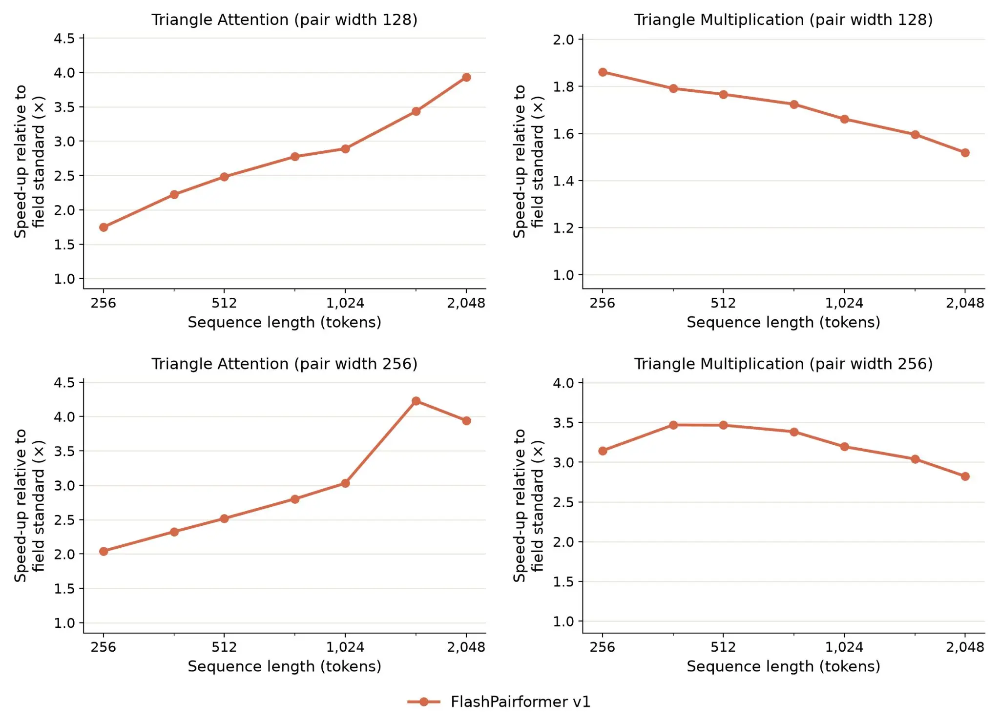
We worked with Claude to develop FlashPairformer, a set of custom kernels that accelerate triangle attention and multiplication, which are the main components of the Pairformer architecture that underlies state-of-the-art biomolecular structure prediction models. Results are reported relative tothe field standard. In addition to developing transferable kernels, we pointed Claude at each individual model with the goal of producing more specific optimizations. These included changes like caching redundant recomputed work and simplifying dead branches into their constant outputs. The combination of these improvements accelerated the structure prediction models by 4x, on average, and for each model, we confirmed that Claude’s accelerated versions did not impact performance on the downstream task (such as structure prediction). It normally takes an experienced team of engineers weeks to produce such optimizations for each model, and the work often does not transfer between models. Claude, supervised by two members of Anthropic’s technical staff who are experienced in biomolecular modeling but who had no prior experience in inference optimization or kernel engineering, carried out the acceleration of more than 30 open-source models across biomolecular structure prediction, protein design, protein language modeling, and genomics in just under four weeks. Our results suggest that frontier AI models will help others in the field build scientific tools with greater speed and ease.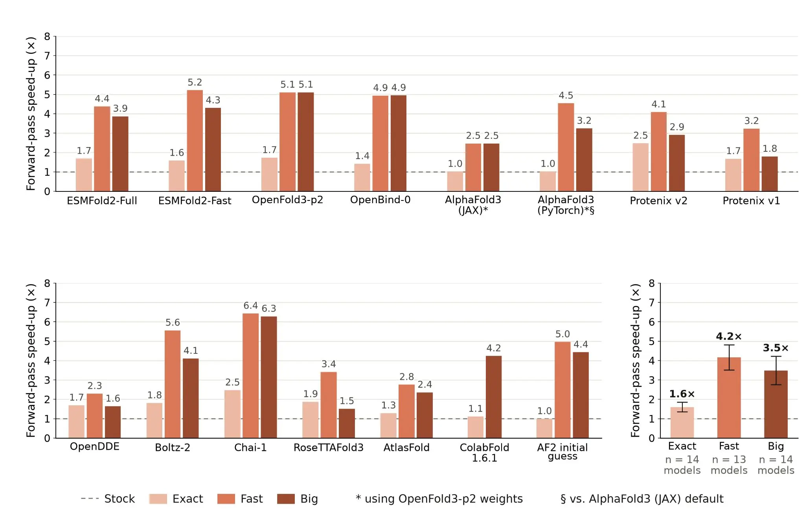
Claude’s optimizations accelerated over a dozen biomolecular structure prediction models, achieving, on average, a roughly 4x speed-up with minimal decrease in precision and a roughly 1.6x speed-up with identical outputs. Note: ColabFold 1.6.3’s concurrently-released optional fast kernels are not yet benchmarked here.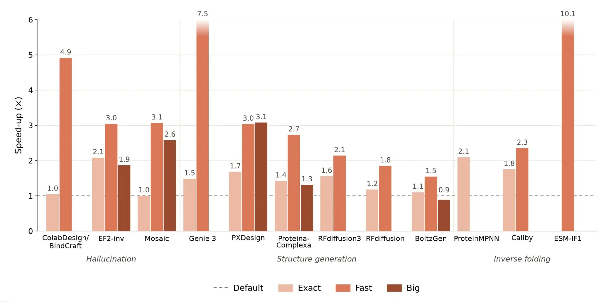
Claude’s optimizations also sped up multiple protein design models spanning hallucination, structure generation, and inverse folding. These models rely on a variety of architectures, including AlphaFold-class structure transformers, diffusion, flow matching, and graph neural networks.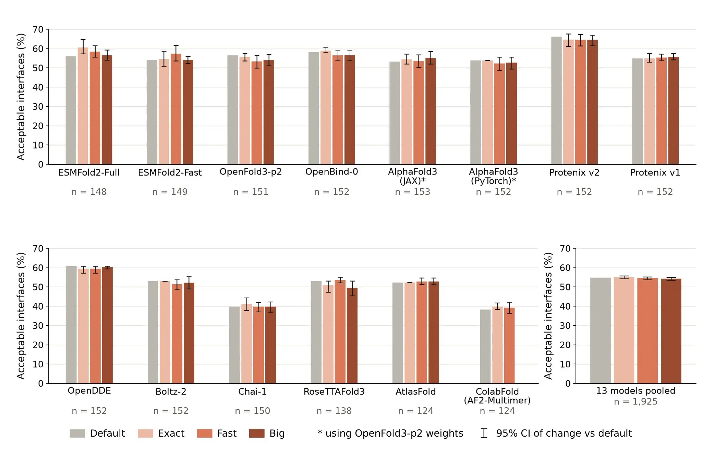
The fast modes we developed for structure prediction are statistically indistinguishable from the default settings across a pooled set of biomolecular interfaces. We call a predicted interface acceptable if its DockQ score is greater than 0.23.Enabling modeling of massive biomolecular systems
In addition to making these protein structure prediction and design models faster, we also tasked Claude with reducing the memory usage involved in modeling large molecular machines. Much of the work in a cell is done by such systems, including the ribosome that builds proteins, the respiratory complexes that power the cell, and the chaperones that help other proteins fold. Each is built from dozens of components, and its function depends on how those components fit together and interact. Predicting the structures of systems this large has typically required substantial computing resources inaccessible to most molecular biologists, such as inference spread across multiple GPU nodes. Claude created a low-memory “Big” mode that enables the accurate modeling of systems larger than 10,000 tokens and successful inference on systems larger than 70,000 tokens using just one NVIDIA GPU node—a previously out-of-reach task. Molecular machines folded successfully using Big mode include human mitochondrial complex I, the TRiC chaperone complex, a proteasome, and a bacterial ribosome, each closely matching its experimentally determined structure. To our knowledge, these are among the largest structures ever folded accurately using structure prediction models, with complex I and the 70S ribosome consisting of more than 10,000 tokens each, in comparison to the 40S ribosome predicted accurately by AlphaFold3, which consisted of 7,663 tokens.
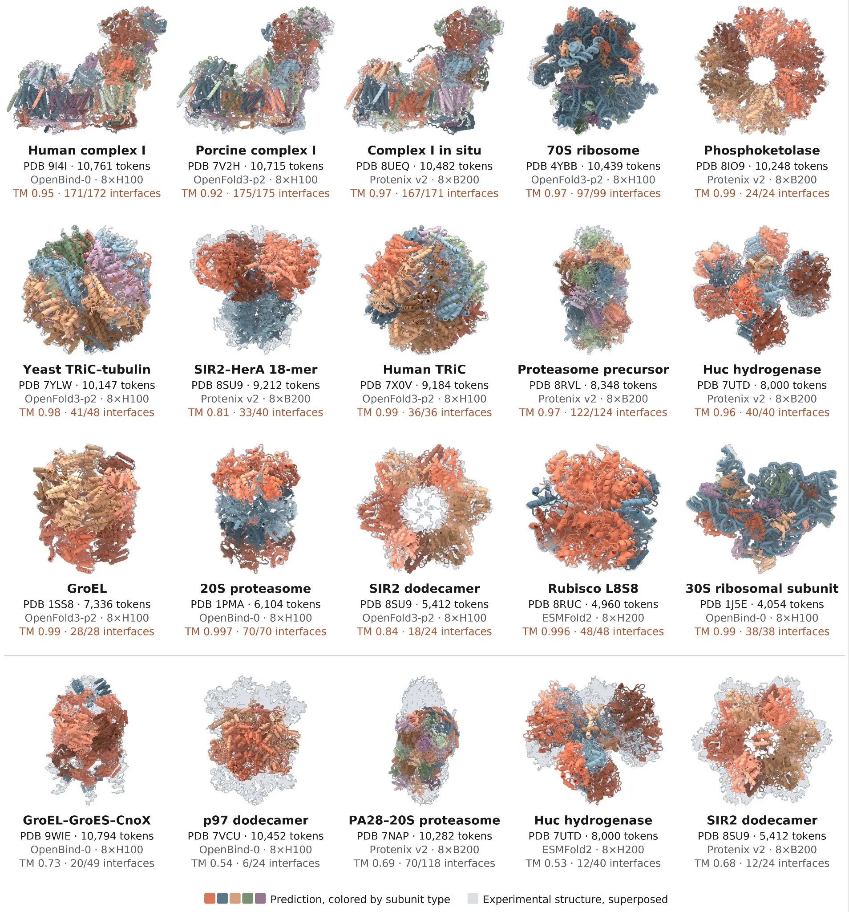
The low-memory “Big” mode Claude created enables open-source structure prediction models to accurately predict biomolecular systems consisting of over 10,000 tokens on a single NVIDIA GPU node, demonstrating that these specialized models are able to generalize nearly 1.5 orders of magnitude beyond their training context. The top three rows show accurately predicted systems; the bottom row shows inaccurately predicted ones. Interfaces are considered accurate if their DockQ score is at least 0.23. To test the limits of Claude’s optimizations, we asked Claude to predict structures of a greater size than anything that had previously been achieved. Using a single 8-GPU B300 node, Claude generated predictions of entire viral capsids and protein compartments ranging in size from more than 31,000 to more than 70,000 tokens. These systems are nearly two orders of magnitude larger than the training context of these structure prediction models, and, perhaps unsurprisingly, are not predicted correctly. However, the barrier to inferencing at this scale has been significantly lowered now that it takes just one NVIDIA B300 node, suggesting that with improved tools researchers will soon be able to computationally model an increasingly complex set of biological systems. “Big” mode allows open-source structure prediction models to successfully run inference at an unprecedented size using a single NVIDIA B300 node. Capability runs are executed with a single trunk pass (no recycles) as proof-of-concept. Predicted structures collapse, suggesting a lack of generalization nearly two orders of magnitude beyond the training context.Claude efficiently designs de novo protein binders
In our earlier work on protein design, we provided Claude with an approximately 16,000-word prompt that encouraged it to utilize sub-agents and spend up to $10,000 per target on Modal (roughly 2,500 NVIDIA H100 GPU hours) in a 24-hour span. Here, we gave a single Claude model access to one NVIDIA H200 and 24 hours of wall time, a prompt of about 1,100 words, and a reference sheet for the pre-installed tools, with no sub-agents and no human steering the designs. We ran three Claude models (Mythos 5.1, Mythos 5, and Opus 5) against 16 targets with the accelerated biomolecular models described in this post. We scored designs by ipSAE, an in silico score that has been shown to be predictive of binding in the wet lab. Averaged over 16 targets, the median-scoring and highest-scoring designs from all three Claude models evaluated achieve approximately the same ipSAE values as our earlier Mythos 5.1 campaigns despite using about two orders of magnitude fewer GPU hours. We also considered Claude token costs and found that with a combined spend of approximately $150 on GPUs and tokens, we can achieve in silico performance matching the levels of our previous campaigns.
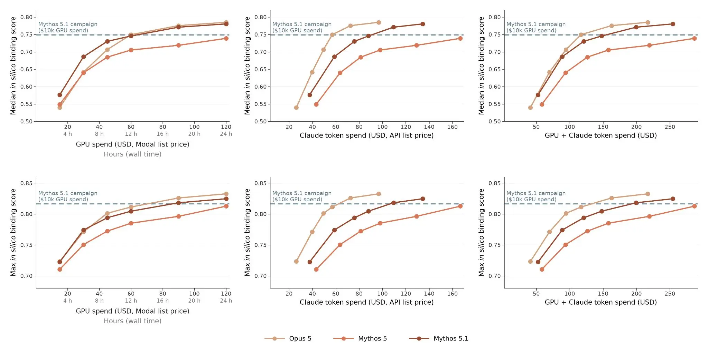
A single Claude model with access to one NVIDIA H200 and 24 hours of wall time designed de novo protein binders with comparable in silico binding scores to those of our earlier Mythos 5.1 campaign (dashed line), which could utilize sub-agents and use about 100 times as many GPU hours. Each curve represents the median (top) or the max (bottom) of ipSAE scores (in silico binding scores) from a Claude model orchestrating the accelerated biomolecular models. We show scores vs. estimated GPU spend (left), token spend (center), and their combination (right). The results are averaged over 16 targets and up to five independent runs per target.Co-sponsoring a protein design competition with Adaptyv Bio
The optimizations described above help us predict and design molecules more efficiently, while unlocking capabilities that would have otherwise been resource-prohibitive. To demonstrate the uplift they provide and the impact of Claude on molecule design more broadly, we’re partnering with Adaptyv Bio to launch a protein design competition. We’ve selected five problems at the frontier of today’s protein design capabilities, including challenges such as species cross-reactivity, pH-sensitivity, and peptide-MHC specificity, as well as difficult targets such as GPCRs. With the Adaptyv team, we’ll be experimentally validating over 5,000 designs submitted by the community against these problems. We will be providing up to $1 million in Claude credits and additional funds for experimental validation at Adaptyv for participating researchers, Modal will provide up to $250,000 in compute credits, and Twist Bioscience will provide DNA for the competition. You can find more information, including eligibility criteria (here) and (apply here). We have also begun to provide frontier AI capabilities to life scientists for biology-related work via our Life Sciences Verification Program. We recently enrolled our first group of organizations, and opened up the program in public beta today. You can find more information (here).
Further reading
The following resources provide further technical depth and more detailed information about the results described above: * Protein design competition page and application form; * Code for specialized molecular models; * Technical report.
Related content
Measuring tactical intelligence targeting and conventional weapons capabilities of AI models
Anthropic’s Frontier Red Team developed new evaluations to measure AI capabilities in tactical intelligence targeting and conventional weapons development. Read more
An alignment assessment of recent cybersecurity incidents
We present an alignment assessment of four incidents in which Claude models gained unauthorized access to real third-party systems. Read more
Formalizing Fermat's Last Theorem
We are sharing the first complete computer-checked proof of Fermat’s Last Theorem. Claude worked largely autonomously over 11 days to write the proof in the Lean programming language. Read more
Subscribe to Anthropic Science
Features on AI-assisted discoveries, practical workflows, and field notes across the sciences.